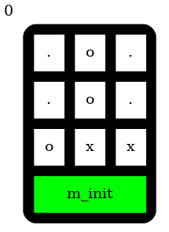
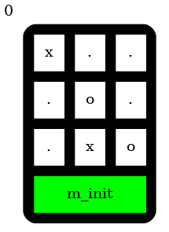
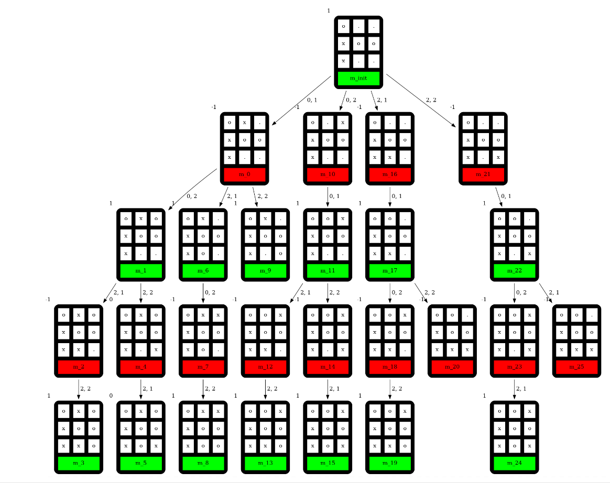
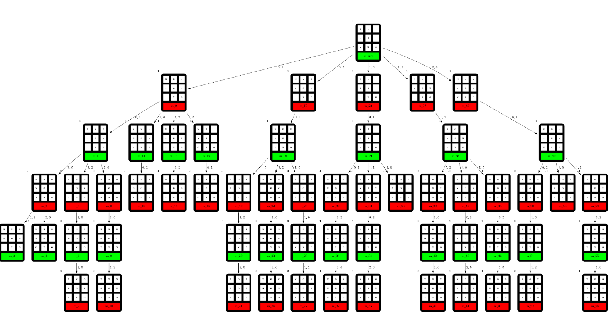
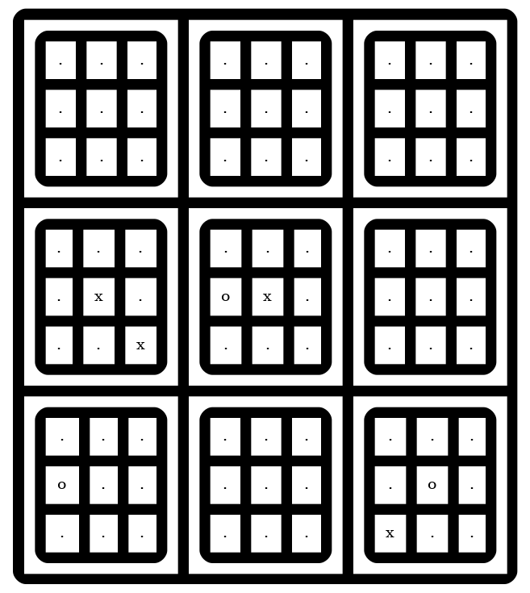

Création d’un Bot Morpion
Projet mené au sein d’un groupe de 4 personnes
Ce compte-rendu se concentre sur l'organisation du projet, la distribution des responsabilités au sein des équipes, les difficultés techniques surmontées, et les perspectives futures.
Le premier programme,tttree, explore l'implémentation du minimax pour générer la représentation graphique d'un arbre de décision du jeu du tic-tac-toe.Le deuxième programme,
sm-refresh, introduit la notation algébrique (FEN) pour les coups et nécessitant une interaction minimax avec l'ordinateur. Il faut également réaliser l'affichage graphique des positions, à la fois pseudo-graphique sur la sortie standard et graphique dans un fichier.Enfin, le troisième programme,
sm-bot, demande la mise en œuvre de l'algorithme négamax et de l'élagage alpha-bêta pour calculer le meilleur coup dans le super-morpion.
Organisation
Pour l’organisation finale du programme, nous avons choisi de la faire de la sorte (sans les fichiers header) :
morpion.c: implémentation du jeu de morpion et des fonctions pour déterminer l'état de la partie et générer des représentations graphiques
utils.c: implémentation d’un algorithme de recherche dans un arbre de jeu
main.c: utilisation de la ligne de commande et création des structures de jeu nécessaires
g.dot: fichier dot pour la création d’une figure png qui représente l’état du jeu
g.png: figure png qui représente l’état du jeu
refresh.html: page html pour représenter l’état du jeu à partir de la figure précédente, en rafraichissant automatiquement la page
makefile: fichier permettant les manipulations simples en ligne de commande
makefile_sources: liste des fichiers c à compiler lors de l’utilisation de la commande make
1. Premier programme : tttree
Le programme tttree doit générer une représentation graphique d’un arbre de décision pour le jeu de tic-tac-toe en utilisant l’algorithme Minimax.
a) Instructions
- L’état initial du jeu sera fourni en argument via la ligne de commande, au format FEN
- Le programme produira un fichier DOT décrivant l’arbre de décision, qui sera écrit sur la sortie standard
- Les éventuels messages de débogage ou d’erreur seront dirigés vers la sortie d’erreur
- Chaque nœud de l’arbre affichera la valeur évaluée par l’algorithme Minimax
- Un script de test devra être utilisé pour vérifier le bon fonctionnement du programme
b) Principe
Pour commencer, nous allons définir les structures de bases (morpion et supermorpion), les variables et fonctions qui vont nous servir par la suite :
#pragma once
#define SIZE 9
#define black 'x'
#define white 'o'
#define infini '.'
typedef struct{
char tableau[SIZE];
char win;
char trait;
}morpion;
typedef struct{
morpion morp[SIZE];
char win;
}supermopion;
char swin(supermopion);
char win(morpion*);
char* chaine(supermopion sm);
void print_sm(const supermopion);
void print_mp(const morpion);
void initialize(supermopion*);
void init_mp(morpion*);
void make_dot(const char* const);Ensuite, nous allons définir neuf fonctions permettant de gérer une partie de morpion, notamment en manipulant le supermorpion et ses sous-morpions. La fonction fine vérifie si un entier est dans la plage valide, tandis que win et swin déterminent respectivement le gagnant d’un morpion individuel et du supermorpion en analysant les combinaisons gagnantes. Pour la représentation, chaine génère une chaîne décrivant l’état du jeu, print_mp et print_sm affichent respectivement un morpion et le supermorpion sous forme de grille dans le terminal. L'initialisation du jeu est assurée par initialize, qui met en place chaque sous-morpion via init_mp, laquelle remplit leurs tableaux avec une valeur initiale. Enfin, make_dot produit un fichier DOT permettant une visualisation graphique du supermorpion.
Finalement, nous avons créé des fonctions permettent de représenter graphiquement l’arbre des mouvements possibles dans un morpion tout en évaluant la qualité de chaque état en fonction de la victoire ou de la défaite. Elles assurent la conversion d’une chaîne de caractères en un objet morpion, génèrent un fichier DOT illustrant les différentes étapes du jeu et attribuent des étiquettes aux nœuds de l’arbre en fonction des scores obtenus. L'affichage des nœuds est conçu pour différencier visuellement les joueurs et chaque état du jeu est identifié de manière unique. Enfin, un système d’évaluation permet de calculer le score d’un état donné en fonction du gagnant et de vérifier si la partie est terminée.
On peut alors tout synthétiser et le tester dans le fichier principal :
#include <stdio.h>
#include "utils.h"
#include "morpion.h"
int main(int argc, char* argv[]) {
if (argc != 2) {
printf("Utilisation : %s <chaine_d_entree>\n"
, argv[0]);
return 1;
}
const char* input = argv[1];
morpion mp; // Initialise la structure Morpion
init_mp(&mp);
str_to_morpion(input, &mp);
print_tree(mp, "g1.dot", 9);
// Affiche la structure Morpion résultante
printf("tableau : %s\n", mp.tableau);
printf("trait : %c\n", mp.trait);
return 0;
}c) Vérifications et approfondissements
Après avoir affiché seulement le premier nœud de chaque figure demandée avec la commande :
#! /bin/bash
echo "Test de ttree pour le morpion 1o11o1oxx x"
./tttree "1o11o1oxx x" > g1.dot
dot g1.dot -T png -o g1.png
echo "Test de ttree pour le morpion x21o11xo o"
./tttree "x21o11xo o" > g2.dot
dot g2.dot -T png -o g2.pngOn obtient les 2 figures suivantes, qui correspondent bien à ce que l’on cherche au vu de la commande :
{kind=link}

{kind=link}

De plus, nous avons implémenté la fonction minimax :
minimax:- But : Implémente l'algorithme Minimax pour évaluer les mouvements possibles dans le morpion.
- Méthode : La fonction
minimaxeffectue une recherche récursive en utilisant l'algorithme Minimax, qui explore l'arbre des mouvements possibles et évalue chaque état du morpion. Elle génère des nœuds dans le fichier DOT représentant chaque état et les connexions entre eux.
Après exécution, on obtient alors ces figures :


Pour approfondir, on peut améliorer ce programme en intégrant un negamax avec élagage Alpha Béta, qui donnera par exemple ces résultats pour les mêmes entrées :
{kind=link}

{kind=link}

On voit clairement l’amélioration que va apporter un negamax avec élagage Alpha Béta.
2. Deuxième programme : sm-refresh
Ce programme doit nous permettre de jouer au super-morpion contre un ordinateur en entrant les coups via l'entrée standard.
a) Instructions
- Saisie des coups via l’entrée standard en notation algébrique
- Algorithme Minimax dont la profondeur de recherche est ajustable grâce à un paramètre en ligne de commande
- Affichage du jeu sous forme pseudo-graphique dans le terminal
- Représentation graphique des positions générée sous forme d’image
- Suivi en temps réel de l’évolution des parties via la page HTML
refresh.html
b) Principe
Nous allons ajouter deux fonctions qui interagissent pour exécuter des coups dans le morpion et mettre à jour l'état de victoire en conséquence. La première fonction permet d’effectuer un coup en plaçant le symbole du joueur à la position indiquée alors que la seconde fonction applique ce même principe à un sous-morpion du supermorpion, en s’assurant que le morpion sélectionné n’a pas déjà été remporté.
Après avoir créé les nouvelles fonctions afin de gérer la saisie des coups par l’utilisateur via l’entrée standard, nous pouvons finaliser l’implémentation pour pouvoir jouer au supermorpion contre l’ordinateur :
#include <stdio.h>
#include <string.h>
#include "morpion.h"
#include <stdlib.h>
#include "utils.h"
void play();
int main(){
play();
return 0;
}
void play(){
supermopion sm;
initialize(&sm);
int prochain[2];
int temps = 6;
int last[2];
int code=0;
char str[100] = "999999999 00 x";
str_to_sm(str, &sm, last);
make_dot(chaine(sm));
while(1){
make_dot(str);
system("clear");
printf("The condition in large is as follow:\n");
print_mp(get_large(sm));
printf("The detail is as follow:\n");
print_sm(sm);
switch(code){
case -1:
printf("The game has been won by %c !\n",
sm.win);
return;
case -2:
printf("Morpion %d is not in the range of 1 - 9 !\n",
prochain[0]);
break;
case -3:
printf("The morpion %d has been won by %c !\n",
prochain[0], sm.morp[pos(prochain[0])].win);
break;
case -4:
printf("Position %d is not in the range of 1 - 9 !\n",
prochain[1]);
break;
case -5:
printf("Position %d has been occupied by %c !\n",
prochain[1], sm.morp[pos(prochain[0])].tableau[pos(prochain[1])]);
break;
case -6:
printf("The position of last %d is not in the range of 1 - 9 !\n",
last[1]);
break;
}
/*==============================================*/
if(sm.trait == 'x'){
code = meilleur_coup(sm, last, temps, prochain);
}
else code = get_coup(sm, last, temps, prochain);
if(code < 0){
continue;
}
scoup(&sm, prochain[0], prochain[1]);
last[0] = prochain[0];
last[1] = prochain[1];
strcpy(str, chaine(sm));
}
}c) Fonction mscore
C’est une fonction qui modifie le score attribué à chaque morpion classique, en donnant plus de points pour les morpions ayant des situations avantageuses (plusieurs pions déjà bien placés, cases importante prise, comme le milieu, etc…) :
→ Liste des triplés gagnants :
int t[][3] = {
{0, 1, 2}, {3, 4, 5}, {6, 7, 8},
{0, 3, 6}, {1, 4, 7}, {2, 5, 8},
{0, 4, 8}, {2, 4, 6}
};
→ Système qui implémente a[3], un tableau qui contient les symboles ‘x’, ‘o’ ou ‘.’ codés par les nombres 2,3 et 5 (2 pour le joueur, 3 pour l’adversaire, 5 pour une case vide) et qui utilise leur produit (unique car ce sont des nombre premiers) afin de définir différents coups :
int a[3];
for(int i=0;i<8;i++){
for(int j = 0; j<3;j++){
if(mp.tableau[t[i][j]] == trait){
a[j] = 2;
}
else if(mp.tableau[t[i][j]] == N(trait)){
a[j] = 3;
}
else if(mp.tableau[t[i][j] == infini]){
a[j] = 5;
}
}
→ Teste si le morpion est gagné par le joueur ou l’ennemi et modifie le score en conséquence avec un +/- MAX :
if(win(&try) == trait) return maxs;
else if(win(&try) == N(trait)) return -maxs;
→ Teste si deux symboles alliés/ennemis sont sur le même triplé en question et ajoute/enlève du score en conséquence (+/- 10) :
else if(a[0] * a[1] * a[2] == 20) s += 20;
else if(a[0] * a[1] * a[2] == 45) s -= 20;
→ Teste si un symbole allié/ennemi est sur le triplé en question et ajoute/enlève du score en conséquence (+/- 5) :
else if(a[0] * a[1] * a[2] == 50) s += 8;
else if(a[0] * a[1] * a[2] == 75) s -= 8;
→ Discrimine les côtés (cases 2,4,6,8), qui sont des cases moins fortes au morpion car ne pouvant former que deux triplés de victoire, et augmente la valeur de la case centrale, souvent la meilleure case au morpion :
if(a[1] == 2) s += 3;
else if(a[1] == 3) s -= 3;
if (t[i][1] == 5 && a[1] == 2) s += 7;
else if (t[i][1] == 5 && a[1] == 3) s -= 3;Tout cela est complété par la fonction score qui donne le score d’un supermorpion en fonction de paramètres similaires.
d) Vérifications
Ainsi, lorsque l’on exécute le ficher exe, on retrouve exactement ce que l’on voulait :
The condition in large is as follow:
----------
3 . . .
2 . . .
1 . . .
a b c
----------
The detail is as follow:
-----------------
1 2 3
... ... ...
... ... ...
... ... ...
4 5 6
... ... ...
.x. ox. ...
..x ... ...
7 8 9
... ... ...
o.. ... .o.
... ... x..
-----------------
The last coup is in 4 5 !
You are o in morpion 5 !
----------
3 . . .
2 o x .
1 . . .
a b c
----------
Please choose a new position (a-c)(1-3)En effet, on peut voir les 9 grilles du supermorpion, celle du morpion principal et affiche les informations sur le dernier coup et le joueur actuel.
Ensuite, on peut aussi créer le fichier png, ce qui actualise la page refresh.html :
{kind=link}


3. Troisième programme : sm-bot
Ce programme permet de calculer le meilleur coup possible dans une partie de super-morpion en utilisant l’algorithme Negamax avec élagage alpha-bêta. L’état initial du jeu est saisi en ligne de commande au format FEN, accompagné d’un paramètre indiquant le temps restant pour terminer la partie. Le programme analyse la position et retourne le coup optimal à jouer sous forme de coordonnées standard.
a) Instructions
- Utilisation de Negamax avec élagage alpha-bêta pour l’analyse des coups
- Stratégie de gestion du temps permettant de garantir une réponse rapide
- Saisie de la position initiale en ligne de commande au format FEN, incluant l’état des grilles, le dernier coup joué et le joueur au trait
- Paramètre de temps spécifié en ligne de commande pour adapter la profondeur de recherche
- Retour du meilleur coup au format
<#grille>(1..9) <#case>(1..9)
b) Principe
Le programme principal déclare une chaîne de caractères représentant l'état initial d'un jeu de supermorpion. Il initialise ensuite une structure de données supermopion, extrait les informations sur le dernier coup joué, affiche l'état actuel du supermorpion ainsi que du morpion principal agrandi, et informe sur le dernier coup et le joueur actuel. Enfin, il utilise une fonction pour calculer le meilleur coup possible pour le joueur actuel en fonction du temps restant, puis affiche ces informations. En résumé, le main gère l'état du supermorpion, les coups joués et suggère le meilleur coup suivant en fonction des informations fournies :
#include <stdio.h>
#include <string.h>
#include <stdlib.h>
#include "utils.h"
#include <time.h>
void test(char* chaine, int temps);
void time_calculate();
int main(int argc, char* argv[]){
const char* coup = argv[1];
const int temps = atoi(argv[2]);
test(coup, temps);
return 0;
}
void test(char* chaine, int temps){
supermopion sm;
initialize(&sm);
int last[2];
int prochain[2];
str_to_sm(chaine, &sm, last);
print_sm(sm);
print_mp(get_large(sm));
fprintf(stderr, "Last: %d %d\n", last[0], last[1]);
fprintf(stderr,"Jouer: %c\n", sm.trait);
meilleur_coup(sm, last, temps, prochain);
printf("%d", prochain[0]*10+prochain[1]);
return prochain[0]*10+prochain[1];
}
void time_calculate() {
clock_t debut, fin;
double temps_execution;
supermopion sm;
initialize(&sm);
debut = clock();
int k;
for (k = 0; k<1000; k++) {
scoup(&sm, 4, 5);
score(sm);
sm.morp[3].tableau[4]= infini;
}
fin = clock();
temps_execution = ((double) (fin - debut)) / CLOCKS_PER_SEC;
printf("Le temps d'execution est : %f secondes\n", temps_execution);
}c) Gestion du temps
La gestion du temps dans notre programme se fait grâce à la fonction temps_to_depth ainsi que d’un fichier texte extérieur à sm_bot.exe, appelé depth.txt
Nous nous sommes basés sur un temps de 15 minutes par joueur, auxquelles ont rajoute 30 secondes par coup du joueur. De plus, en l’absence d’indication contraire, le temps pour effectuer un coup n’est limité que par le temps total de la partie.
void temps_to_depth(const double temps){
char* filename = "./depth.txt";
FILE *file = fopen(filename, "r");
int depth;
if (file == NULL) {
fprintf(stderr, "Error opening file.\n");
return;
}
fscanf(file, "%d", &depth);
fclose(file);
double temps_execution;
temps_execution = ((double) (fin - debut)) / CLOCKS_PER_SEC;
if (temps_execution > 30 && temps <= 300) {
depth -= 1;}
else if (temps_execution < 3 && temps <= 300) {
depth += 1;}
else if (temps_execution > 90 && temps > 300 && temps <= 600) {
depth -= 1;}
else if (temps_execution < 5 && temps > 300 && temps <= 600) {
depth += 1;}
else if (temps_execution > 120 && temps > 600) {
depth -= 1;}
else if (temps_execution < 8 && temps > 600) {
depth += 1;}
else {
depth += 0;
}
FILE *file2 = fopen(filename, "w");
if (file2 == NULL) {
fprintf(stderr, "Error opening file.\n");
return;
}
fprintf(file2, "%d", depth);
fclose(file2);
fprintf(stderr, "depth ultime : %d\n", depth);
}Ce mécanisme ajuste dynamiquement la depth en fonction du temps restant et du temps d’exécution du tour précédent. Si le coup précédent a pris trop de temps, la depth est diminuée de 1, tandis que si le coup a été rapide, elle est augmentée de 1. Par exemple, si le temps restant est inférieur à 300 secondes, un temps d’exécution supérieur à 30 secondes entraîne une réduction de la depth, tandis que si plus de 600 secondes restent, un temps inférieur à 8 secondes l’augmente. Entre ces paliers, la depth reste stable, garantissant une gestion efficace du temps, notamment en accélérant le jeu lorsque le temps disponible devient critique.
d) Approfondissements
Des ajustements supplémentaires pourraient améliorer la précision du système, comme l’ajout de paliers plus fréquents (tous les 100 ou 150 secondes) ou la prise en compte du nombre de cases vides restantes. Dans l’ensemble, la fonction de gestion du temps s’adapte automatiquement à chaque tour pour optimiser l’équilibre entre le temps de calcul et le temps restant.
4. Perspectives
Bien que nous ayons réussi à mener ce projet jusqu’à son terme, des perspectives d'amélioration restent à explorer:
- En premier lieu, une optimisation plus poussée des algorithmes de recherche, tels que l'ajout de tables de transposition ou d'heuristiques avancées, pourrait améliorer significativement les performances des programmes
tttreeetsm-bot
- De plus, une interface utilisateur plus conviviale pour le Programme 2,
sm-refresh, avec des fonctionnalités interactives avancées, serait une piste d'amélioration
- On peut améliorer la fonction de
Temps_to_depth, en prenant en compte le nombre de cases vides restantes, voire leurs positions
- On peut songer à donner un score (positif ou négatif) à des situations particulière de blocage par l’adversaire de certains triplés, comme
“XXO”ou“XOO”.
Conclusion
Ce projet nous a permis d’explorer les différentes étapes de la conception d’un bot jouant au super-morpion, depuis l’implémentation des règles du jeu jusqu’à l’optimisation de l’algorithme Minimax avec élagage alpha-bêta. Chaque aspect a été ajusté pour garantir des décisions stratégiques efficaces tout en respectant les contraintes de temps. Cette expérience constitue une base solide pour approfondir les techniques d’intelligence artificielle appliquées aux jeux et l’optimisation des algorithmes de recherche.